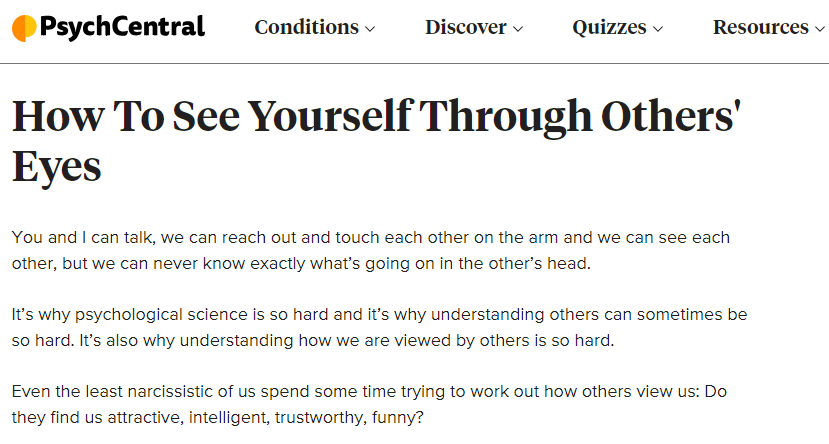

Welcome to "How Others See Me"
Understanding how others perceive us is crucial for personal growth and effective communication. This perception gap between how we see ourselves and how others view us can significantly impact our relationships, career, and overall life satisfaction. By exploring this topic, we can gain valuable insights into our behavior, improve our self-awareness, and develop stronger interpersonal skills. This journey of self-discovery not only enhances our personal lives but also provides an excellent opportunity to improve our English language skills through engaging content and interactive exercises.
Resources
Article 1: The Impact of External Self-Awareness
This article delves into the concept of external self-awareness and its profound impact on personal perception. It explores how understanding others' viewpoints can lead to improved social interactions and personal growth, offering valuable insights for both self-improvement and language learning.
Read ArticleArticle 2: Changing Others' Perceptions
Discover practical strategies to influence how others perceive you. This article provides actionable tips on communication, body language, and personal presentation, helping you to project your desired image while enhancing your English vocabulary and expression skills.
Read ArticleArticle 3: Seeing Yourself Through Others' Eyes
Explore methods to gain perspective on how others view you and the impact on your self-image. This article discusses techniques like feedback solicitation and empathy exercises, offering a unique approach to self-reflection while improving your English comprehension.
Read ArticleInteractive Tasks
Tasks for Article 1: The Impact of External Self-Awareness
Task 1.1: Understanding External Self-Awareness
What are the key components of external self-awareness discussed in the article?
Task 1.2: Personal Application
How can you apply external self-awareness principles in your daily interactions?
Task 1.3: Knowledge Check
True or False: External self-awareness only affects professional relationships.
Tasks for Article 2: Changing Others' Perceptions
Task 2.1: Communication Strategies
What are the most effective strategies mentioned in the article for changing others' perceptions?
Task 2.2: Implementation Plan
Based on the article, which specific actions would you implement to improve how others perceive you?
Task 2.3: Knowledge Check
True or False: Body language plays a significant role in how others perceive you.
Tasks for Article 3: Seeing Yourself Through Others' Eyes
Task 3.1: Self-Reflection Methods
What are the main techniques discussed in the article for understanding others' perspectives of you?
Task 3.2: Feedback Analysis
How does the article suggest you should collect and process feedback from others?
Task 3.3: Knowledge Check
True or False: The article suggests that seeking feedback from multiple sources is more valuable than relying on a single person's opinion.
Fun English Learning Games
Game 1: Perception Matching
Match how you see yourself with how others might see you in various scenarios.
Play NowGame 2: Body Language Charades
Act out and guess different emotions and attitudes through body language in this fun online game.
Play NowGame 3: Communication Style Quiz
Discover your communication style and learn how it affects others' perceptions of you.
Take the Quiz